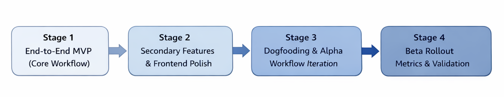
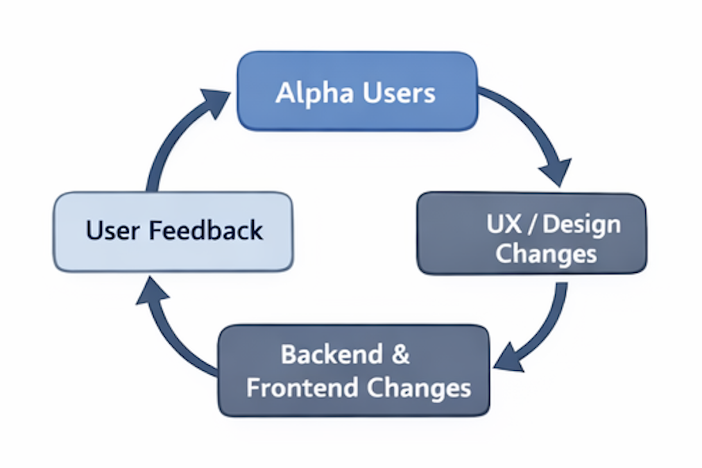
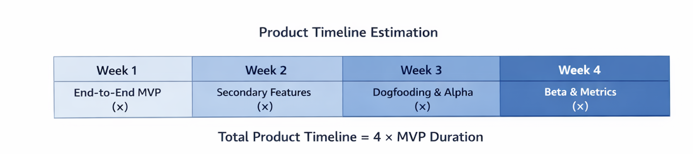
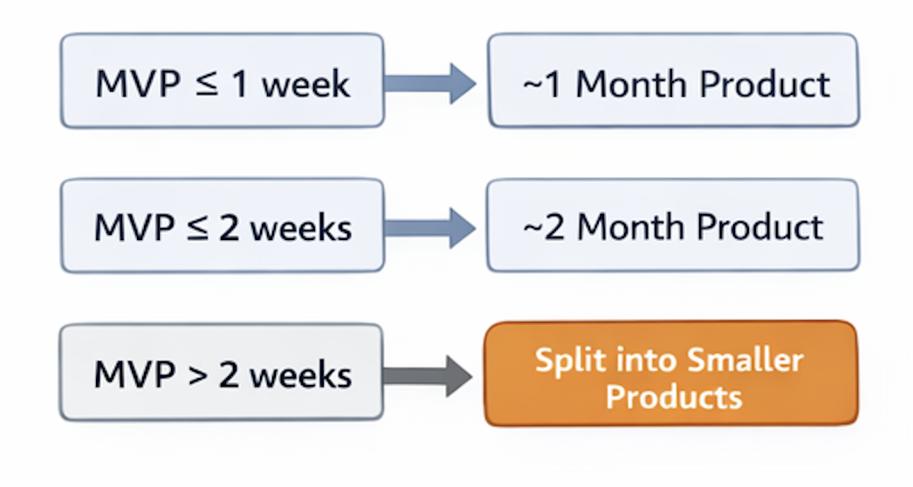

A Practical Framework for Estimating Product Development Timelines
Estimating product development timelines is one of the hardest problems in product management. Not because teams can't execute, but because most estimates are made at the wrong level of abstraction.
Instead of estimating the entire product upfront, I've found it far more reliable to break development into four concrete stages, then estimate everything based on the first and most critical step: the end-to-end MVP.
This article introduces a simple, repeatable framework that works especially well for fast-moving web and startup teams.
The Four Stages of Product Development
Most product development efforts naturally fall into four stages. Each stage has a different goal, risk profile, and type of work.

Stage 1: Build the End-to-End MVP (Core Workflow)
The first stage is building what I call the End-to-End MVP (ERMVP).
A real user can complete the core workflow from start to finish.
This typically includes:
- Core backend data models and tables
- Essential APIs and services
- Main business logic
- A minimal frontend that makes the flow usable
For example, in a video creation product, the core flow might be: upload a video, render it, save it, and display it on the web.
The UI can be ugly. Error handling can be minimal. What matters is that the system works end-to-end.
Stage 2: Secondary Features and Frontend Polish
Once the core flow works, the second stage focuses on usability and completeness.
- Secondary or supporting features
- Frontend polish (loading states, spinners, thumbnails)
- Content moderation and safety checks
- Improved error handling and UX
By the end of this stage, the product should be stable enough for internal dogfooding. The goal is not perfection — it's readiness for real usage.
Stage 3: Internal Dogfooding and Alpha Users
The third stage is about learning.
When internal teams and alpha users start using the product, assumptions will break. Feedback will expose workflow issues that weren't visible during development.

This stage often involves:
- User feedback collection
- UX and design changes
- Backend and frontend adjustments
- Occasionally, another iteration of the core workflow
This phase should be time-boxed. Otherwise, iteration can continue indefinitely.
Stage 4: Beta Rollout, Metrics, and Validation
By the fourth stage, the product is largely feature-complete.
- Beta rollout to a larger user group
- Bug fixes and small feature tweaks
- Data instrumentation and event validation
- Metric dashboards and A/B testing
This is where opinions give way to data. Without metrics, it's impossible to understand the real impact of the product.
How Timeline Estimation Actually Works
Each of the four stages is roughly equal in effort.
If building the end-to-end MVP takes x, then the full product lifecycle will take approximately 4x.

Examples:
- MVP = 1 week → Product ≈ 4 weeks
- MVP = 2 weeks → Product ≈ 8 weeks
- MVP > 2 weeks → Product is likely too large
Why I Cap the MVP at Two Weeks
In my experience, two weeks is the maximum healthy duration for building an MVP.
Beyond that, coordination costs rise, context gets lost, feedback arrives too late, and timelines become unreliable.

If a product takes more than two months to build, it should almost always be split into smaller, more focused products.
My Default Strategy: One-Month Products
- Week 1: End-to-end MVP
- Week 2: Secondary features + internal dogfooding
- Week 3: Alpha users and workflow iteration
- Week 4: Beta rollout, metrics, and bug fixes
This forces early prioritization and allows feedback to arrive while changes are still cheap.
Why This Framework Works
This approach works especially well for startup and growth-stage teams where speed, learning, and iteration matter more than long-term optimization.
Instead of committing to long, vague timelines, teams commit to:
- A concrete MVP
- Short, visible milestones
- Continuous validation through real usage and data
The result is not just faster development — but more reliable timelines and better products.